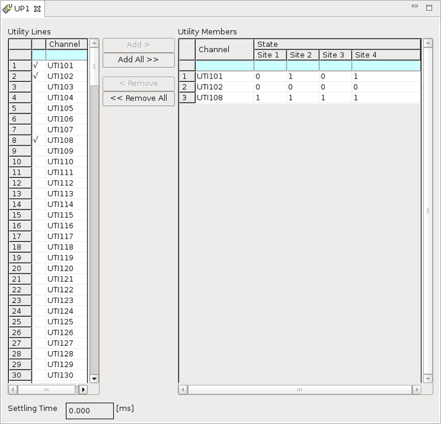

Editing a utility purpose
About this task
This editor lets you:
- Define a new utility purpose from scratch
- Make changes to an existing utility purpose
The same process applies to both cases.
Before you begin
Make sure that an utility purpose has been created.
Procedure
Results
In the Utility Lines area, the utility lines in the utility purpose are indicated with "√".

Functional changes
- Introduced before SmarTest 6.3.2
- SmarTest 7.1.3: Moved the site information in the Utility Members area.
- SmarTest 7.1.3: The state buttons are removed.
- SmarTest 7.1.3: Supports copying and pasting the states.
- SmarTest 7.1.3: Supports the undo and redo of state changes.